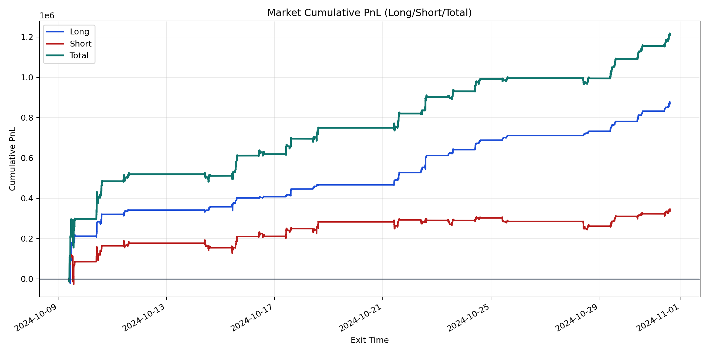
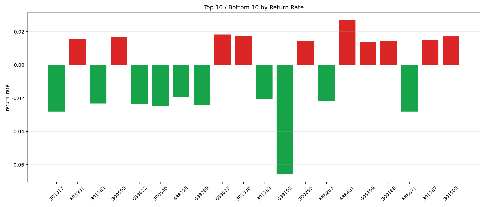

| repo_root | /home/haoranyou/data/output/alpha0.4_1w_5s_3ticks |
|---|---|
| period_months | 1 |
| period_label | 2024-10-09_to_2024-10-31 |
| start_time | 2024-10-09 09:50:12 |
| end_time | 2024-10-31 15:00:00 |
| n_trades | 96204 |
| n_symbols | 2144 |
| total_pnl | 1209900.6774500003 |
| long_total_pnl | 868987.4293 |
| short_total_pnl | 340913.2481500004 |
| total_entry_notional | 886419934.0 |
| long_entry_notional | 241519612.0 |
| short_entry_notional | 644900322.0 |
| total_return_rate | 0.0013649294550386322 |
| long_return_rate | 0.0035979994423806874 |
| short_return_rate | 0.0005286293656866873 |
| top_symbols_by_return | ["688401", "688633", "301338", "301505", "300590", "603931", "301267", "300188", "300295", "605399"] |
| bottom_symbols_by_return | ["688193", "688671", "301317", "300546", "688269", "688622", "301163", "688283", "301283", "688225"] |

